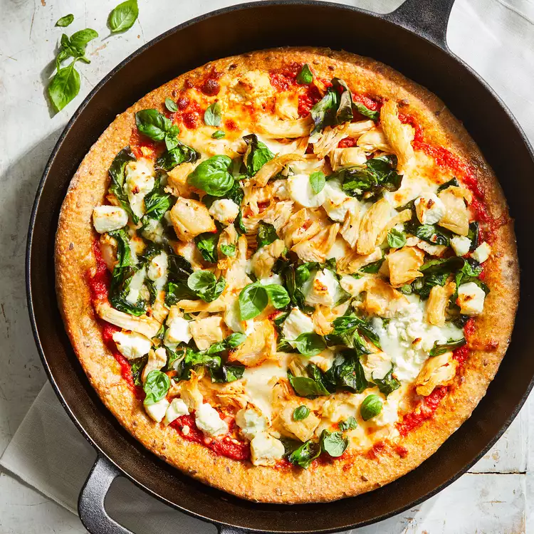

Garlic Butter-Roasted Salmon with Potatoes and Asparagus
Garlic Butter-Roasted Salmon with Potatoes and Asparagus

Description
A one pan healthy recipe involving salmon, potatoes, and asparagus.
Indregients
- 1/2 cup jarred roasted red peppers, rinsed
- 1 tablespoon extra-virgin olive oil
- 1 clove garlic, peeled
- 1/4 teaspoon ground pepper
- 1 pound whole-wheat pizza dough
- 1/2 cup chopped cooked chicken
- 1/2 cup chopped spinach
- 1 cup shredded part-skim mozzarella cheese
- 2 ounces goat cheese, crumbled
Steps
-
Position rack in lower third of oven and place a large cast-iron skillet on it; preheat to 450°F.
-
Combine red peppers, oil, garlic, salt and pepper in a blender. Puree until smooth.
-
Roll and/or stretch pizza dough on a lightly floured surface into a 12-inch circle.
Carefully place the pan on a heatproof surface (remember, the handle will be hot),
and transfer the dough to it. Spread the sauce over the dough and top with chicken, spinach, mozzarella and goat cheese.
-
Bake the pizza on the lower rack until the crust is browned and the cheese is melted, 15 to 20 minutes. Garnish with basil, if desired.